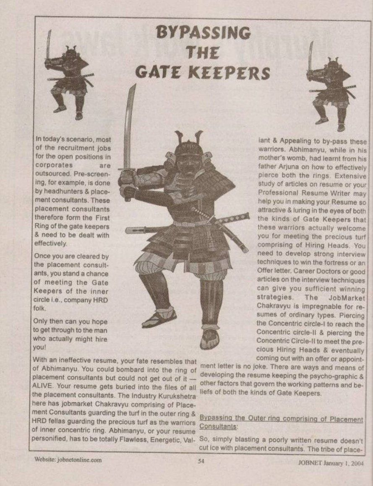
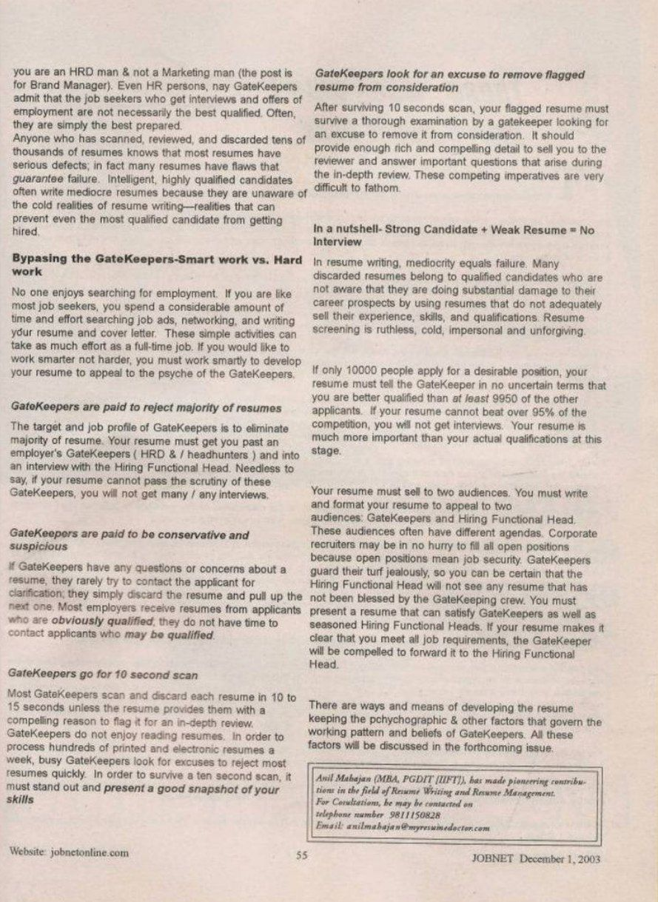

JOBNET Career Intelligence
Working Smarter to Reach the Right Decision-Makers
About This Article
Following his widely appreciated article The GateKeepers, Anil Mahajan explored the next logical question: how can capable professionals improve their chances of reaching the people who actually make hiring decisions?
The article explained that success is not about avoiding recruitment processes or circumventing organisational systems — it is about understanding how hiring works, presenting a compelling professional profile and ensuring that your value is recognised throughout the recruitment journey.
While the GateKeepers have evolved from HR executives to AI-powered recruitment systems and digital professional networks, the need to position yourself strategically has never been greater.
Original Publication
Scanned pages from the original printed publication.

JOBNET January 2004 — Page 1

JOBNET January 2004 — Page 2
Article Transcript
Originally published in JOBNET — January 2004
In today's scenario, most of the recruitment jobs for open positions in corporates are outsourced. Pre-screening, for example, is done by Headhunters, Placement Consultants and Executive Search firms. These folks therefore form the First Ring of the gatekeepers and need to be dealt with effectively.
Once you are cleared by the Executive Search firms, you stand a chance of meeting the GateKeepers of the inner circle — company HRD folk. Only then can you hope to get through to the man who actually might hire you!
Your resume gets buried in the files of all Executive Search firms. The Industry Kurukshetra here has a job-market Chakravyu comprising of Executive Search firms guarding the outer ring and HRD folks guarding the precious inner concentric ring. Abhimanyu — or your resume personified — has to be totally Flawless, Energetic, Valiant and Appealing to bypass these warriors. Abhimanyu, while in his mother's womb, had learnt from his father Arjuna on how to effectively pierce both rings.
Extensive study of articles on resume writing, or your Professional Resume Writer, may help you in making your resume so attractive and compelling in the eyes of both kinds of GateKeepers that these warriors actually welcome you for meeting the Hiring Heads. You need to develop strong interview techniques to win the fortress or an Offer Letter. The JobMarket Chakravyu is impregnable for resumes of ordinary types.
The Two Concentric Rings of GateKeepers
Ring I
Simply blasting a poorly written resume doesn't cut ice with placement consultants. The tribe of Executive Search firms has developed a keen scanning eye and can easily bury your resume in their files forever.
The reasons could be many. Maybe you have no talking personal letter addressed to him. Maybe you never spoke to him. But mainly it is because your resume is badly made and doesn't give him the feel of a winning professional.
This is a psychographic situation to be created by your all-powerful and ascending resume — presented as a marketing tool rather than a stale compendium of history. Your appropriately made resume must put most placement consultants in competition to get you an immediate job change.
Ring II
Bypassing the inner ring comprising of corporate HRD folks is equally important and involves much more than putting together a resume in a layout and format that is pleasing to the eye.
Effective resume writing alone can help you bypass both kinds of GateKeepers, and it involves art, science and a large helping of technology. Many HRD GateKeepers trash functional resumes as soon as they see them. Use a chronological resume format. If you apply for jobs online or through email, paper quality and scannability are unimportant. Content, structure, format and strategy are much more important.
HRD GateKeepers are very fussy about the resume but at the same time they tend to accept the recommendations of the Placement Consultants and Executive Search firms. So, if your resume is approved by the Placement Consultant or Executive Search firm, most of the job is done and the inner ring of HRD warriors crumbles to a large extent.
And lo! You get a date with the Hiring Head. Here the resume needs certain attributes and you need certain interview techniques to enable you to win the Offer / Appointment Letter Jackpot — which we will discuss in the forthcoming issue. Maybe Abhimanyu now needs a charioteer of the likes of Bhagwan ShriKrishna to reveal the Srimad Bhagavad Gita for winning the interview war.
Popularly known by candidates in India as CVSurgeon
Then & Now
Today's professionals no longer rely solely on responding to job advertisements. Executive careers are increasingly shaped through relationships, reputation, digital visibility and strategic networking.
"Bypassing the GateKeepers" does not mean ignoring recruitment processes. It means ensuring your professional credibility reaches the right people through multiple legitimate channels.
These channels include:
The Modern Path
Today's leadership opportunities often emerge through a combination of credibility, visibility and relationships — built over time, not only when a professional starts looking for a new role.
Professional Expertise
Executive Resume
LinkedIn Profile
Industry Reputation
Thought Leadership
Professional Network
Executive Search Consultant
Business Leader / CXO
Leadership Opportunity
How the Concept Has Evolved
Then — 2004
Today — 2026
The objective remains unchanged:
Ensure that your leadership value is visible before an opportunity arises.
Key Takeaways
Practical Advice
Looking Ahead
Artificial Intelligence will continue to transform recruitment, but trust, credibility and leadership reputation will remain fundamentally human. The professionals who succeed will be those who consistently demonstrate expertise, build meaningful relationships and communicate their value effectively across every stage of the hiring journey.
That message from Bypassing the GateKeepers in 2004 remains as relevant today as it was then.
About the Author
Continue Reading